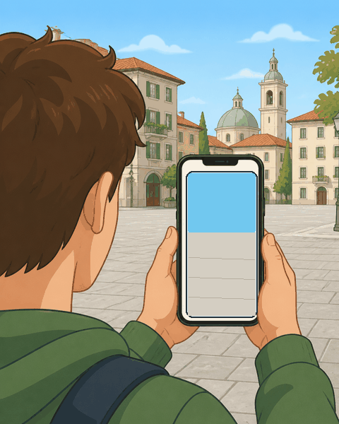
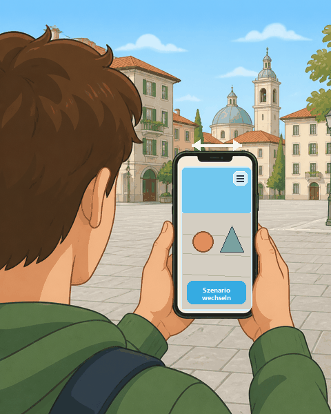

Objektplatzierung
Bitte richte das Gerät auf den Boden und bewege es langsam, bis eine Fläche erkannt wird.
Schwenken Sie mit der Kamera über das Gelände, bis das Fadenkreuz vor Ihren Füßen ist und grün aufleuchtet.

Sehen Sie sich in der Szene um. Wechseln Sie die Szene. Teilen Sie mit uns Ihre Erfahrung mit der EPARtwin WebAR in der Umfrage.

Herzlich Willkommen bei der EPARtwin WebAR Experience!
Anforderungen
EPARtwin WebAR
Wähle zwischen freier Platzierung mit stabilisiertem Reticle und Geo-Platzierung mit Standort und Kompass.
1. Starte AR oder Geo über die Aktionskachel oben.
2. Bewege das Gerät langsam, bis eine stabile Fläche erkannt wird.
3. Im freien Modus setzt du das Objekt direkt auf die stabile Fläche.
4. Im Koordinatenmodus wird das Ziel aus Latitude und Longitude in den lokalen AR-Raum übertragen und auf der stabilen Bodenfläche verankert.
Nutzerumfrage
Bitte teilen Sie uns Ihre Erfahrungen mit der WebAR-Anwendung mit.
Sprache
Die UI kann zwischen Deutsch und Englisch umgeschaltet werden.
Im Koordinaten-Modus wird das Objekt nur innerhalb von 100 m angezeigt.
Fallback-3D-Ansicht aktiv. Im AR-Modus wird zuerst eine stabile Referenzfläche gesucht.
Standort noch nicht angefordert.
Tippe auf "Standort aktivieren", damit der Browser die Freigabe anfragt.
Das komplette geladene Szenenmodell verschieben, skalieren und rotieren. Alle Einzelobjekt-Transformationen bleiben erhalten und werden innerhalb dieser Gesamttransformation angewendet.
Einzelne, benannte Bestandteile des geladenen GLB-Modells bearbeiten. Der Versatz gilt im lokalen Modellkoordinatensystem.
Infotafeln der aktiven Szene bearbeiten. Änderungen gelten sofort; die JSON-Ausgabe muss für eine dauerhafte Änderung in die Site-Konfiguration kopiert werden.
Keine Infotafel ausgewählt.